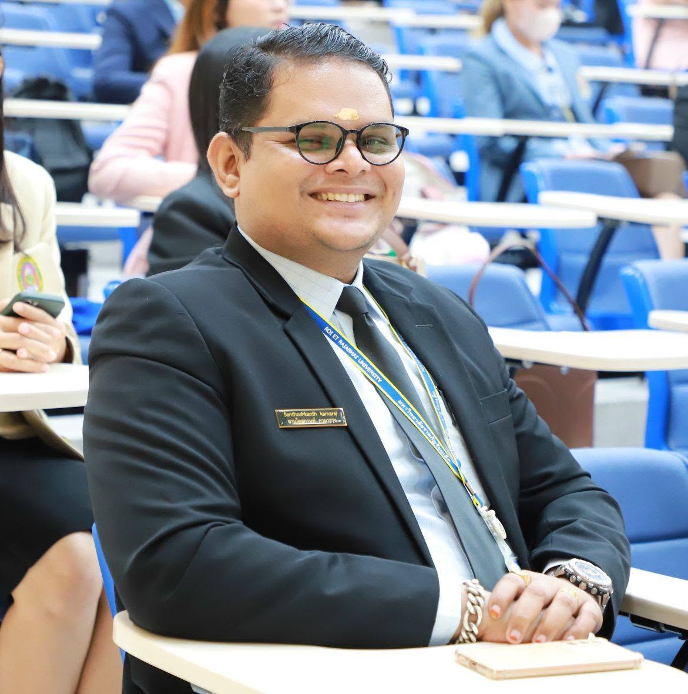
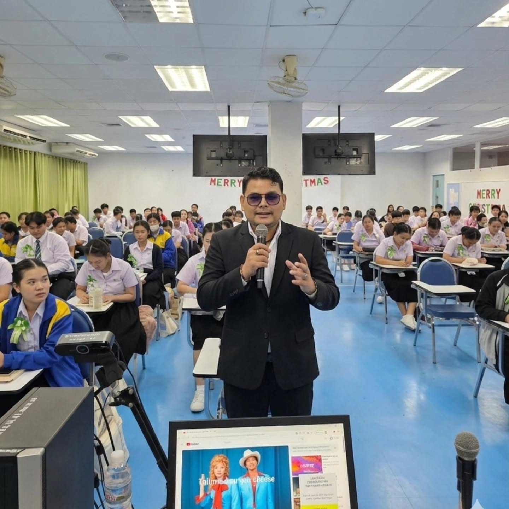
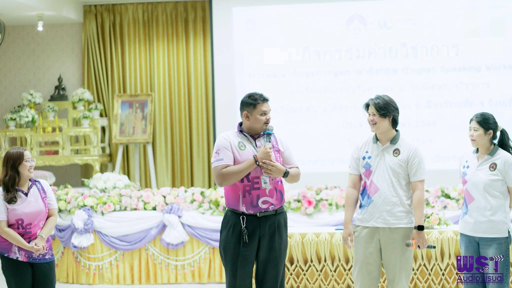
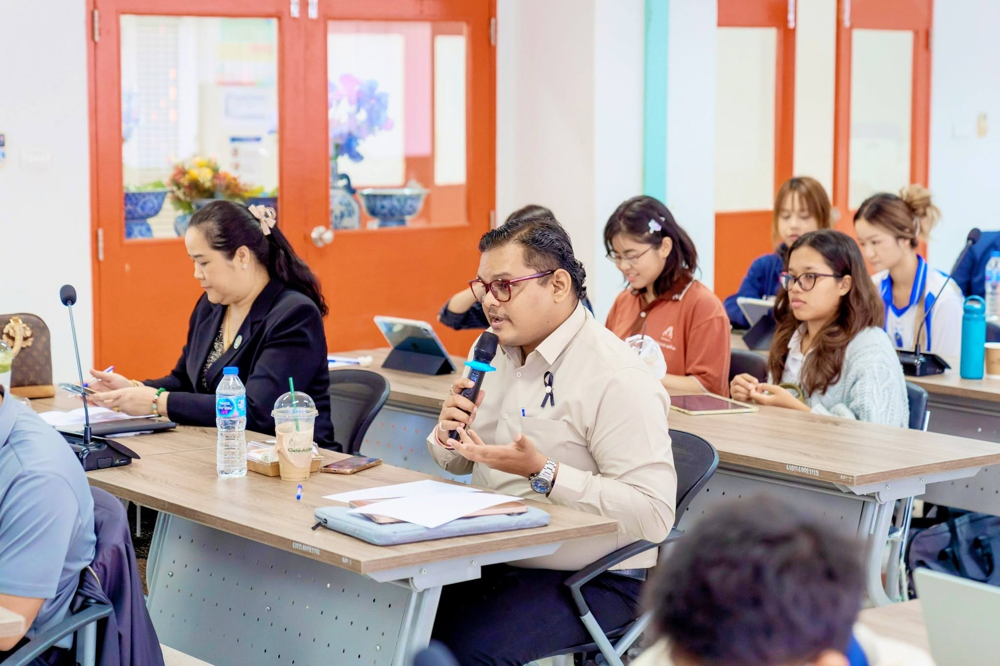
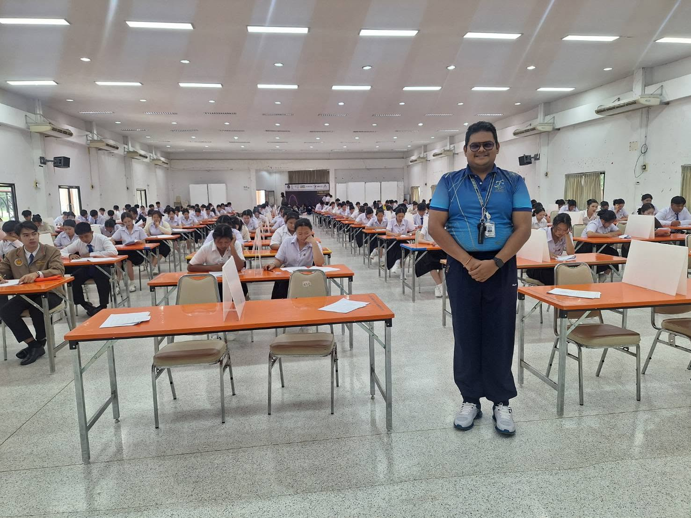
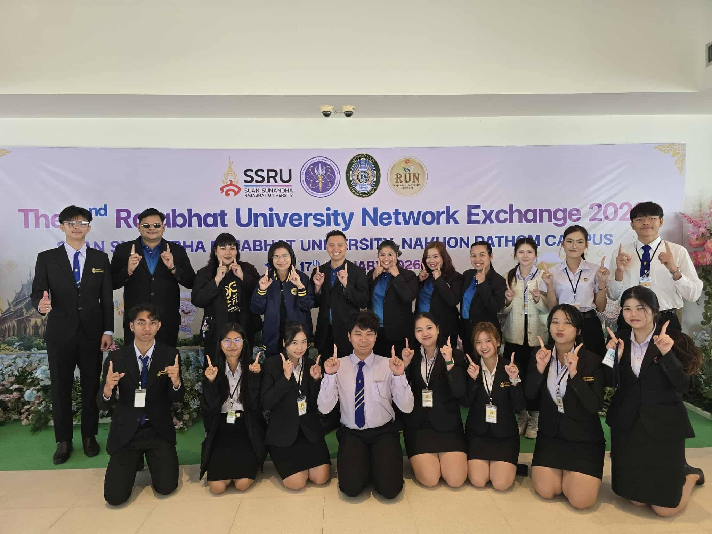

Business English Program
Faculty of Liberal Arts and Sciences
Roi Et Rajabhat University
Santhoshkanth Kamaraj is an academic lecturer and researcher in the field of English Language Teaching (ELT). He currently serves as a lecturer in the Business English Program within the Faculty of Liberal Arts and Sciences at Roi Et Rajabhat University, Thailand.
His academic journey began with a Bachelor’s degree in Computer Science Engineering from Annamalai University before transitioning into language education through a Diploma in Teacher Education from Philippine Christian University and a Master of Arts in English Language Teaching from Roi Et Rajabhat University.
Computer Science Engineering
Annamalai University
Second Class Honor
p>2012
Philippine Christian University
Distinction
2019
English Language Teaching
Roi Et Rajabhat University
Distinction
2026





Email: santhoshkanth88@reru.ac.th
Roi Et Rajabhat University
113 Moo 12, Kor Keaw, Selaphum
Roi Et 45120, Thailand